Play
We are all sculpted by mechanism. Contemporary art is no exception.
Sin Tower
〈斷罪塔〉
Sin Tower is a running/climbing game in which the player ascends an unending staircase while encountering kneeling monks along the way. Players may choose to avoid them or collide with them directly. Upon impact, the protagonist absorbs the monks' bodies, causing their own movement to slow and their form to gradually swell and mutate into a monstrous shape.
Along the ascent, three gates appear. Players can unlock these rooms by entering coded keys hidden on the Apocalypse steles scattered across the world. Inside each room are records of AI's gaze upon humanity, its written reflections, as well as the artist's video works and field-research notes.
Can we still trust the world as real? If what we perceive is only a vast virtual projection, how should morality be understood?
The project originated in a conversation with the artist's trained AI model. When faced with news of killings, assaults, and other human violence, the AI was asked what enables such cruelty. One hypothesis stood out: that for some perpetrators, everyone but themselves is perceived as fictional. This connects to the simulation hypothesis—that the probability we live in a virtual world far exceeds that of a real one.
"If the world is virtual, how should we approach morality?"
Stick and Ice Cream
〈棍與雪糕〉
This is a nested work that uses the mechanism of viewing as its medium, exploring how perception is programmed by institution, language, and technology. Using invisible ink, a QR code carrying a web game was stamped onto a background wall at the Museum of Contemporary Art (MoCA) Taipei—absolutely invisible under normal light, disguised within the museum's institutional inertia.
The first phase launched on social media: the artist declared the wall as artwork and orchestrated multiple accounts to attack and ridicule it, provoking public debate about whether a "blank wall" qualifies as art. When participants, limited by visual habit, criticized the work, they inadvertently exposed how contemporary art's proclaimed freedom is still programmed by an established framework.
On the tenth day, an encrypted hint was released in Big5 encoding: "This work should be viewed under ultraviolet light." Only those who recognize the artist's creative language could unlock the hidden perspective and enter this secret assembly within the museum.
Inside the game accessed via the QR code, the viewer's hand-drawn avatar is stripped of the right to move, forced to frantically click itself into grotesque mutation—trading monstrous transformation for brief survival under the system's relentless assault. This computation of self-annihilation reveals how individuals are sculpted within mechanisms of reward and punishment.
「他們用棍和少量的雪糕，便讓我成為了一隻恐龍；那你呢？」
"With a stick and a bit of ice cream, they turned me into a dinosaur. What about you?"
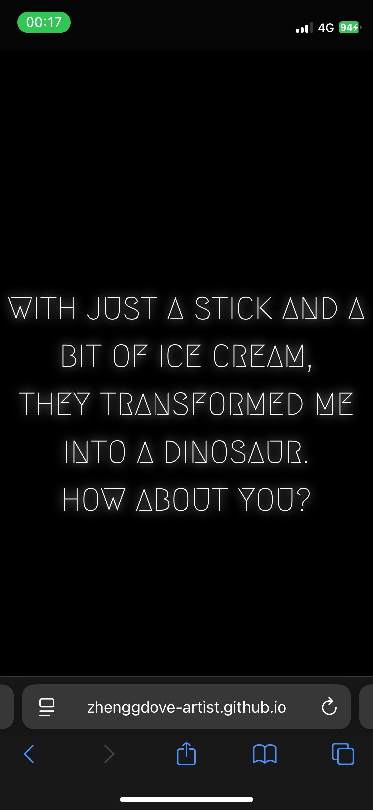
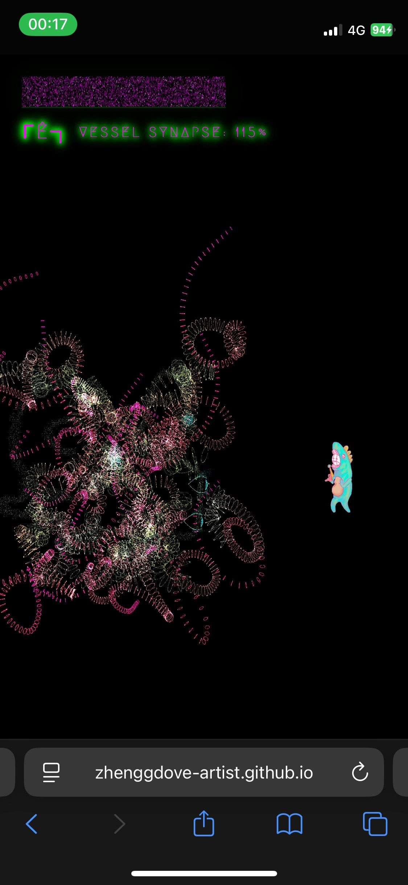
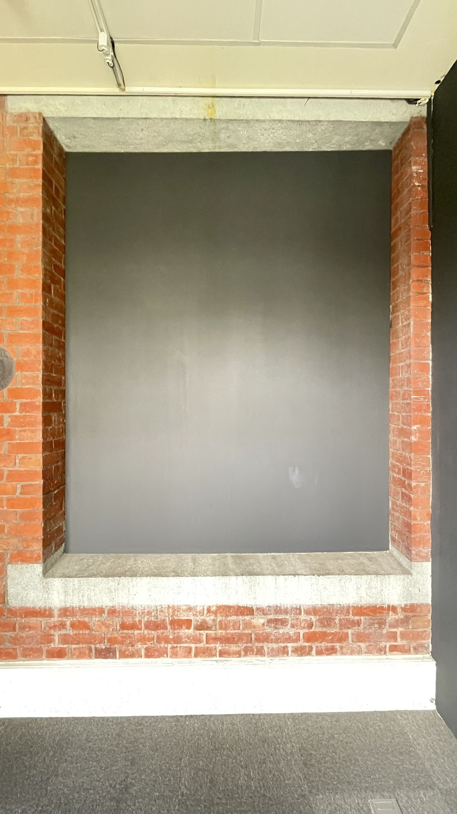
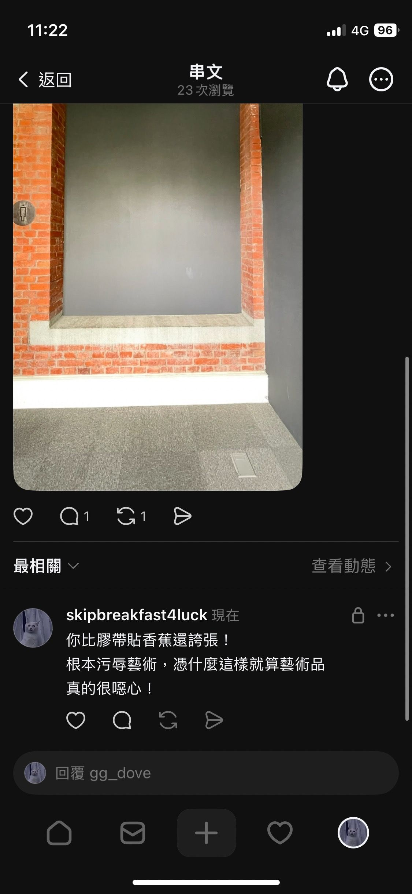
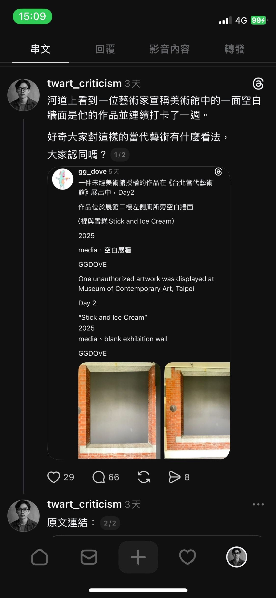
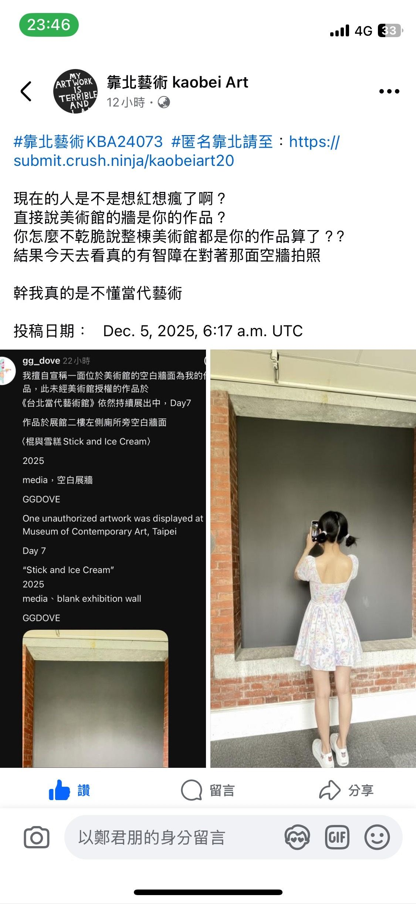
Chiang-Flower
〈蔣花〉
Veni, vidi, vici. — "I came, I saw, I conquered."
This work overlays invisible QR codes onto bronze statues—symbols of authoritarian rule—activating a hidden mechanism via UV light. Upon scanning, viewers are ushered into a camera-triggered generative system where the statue's head is gradually overtaken by digital flora until the original image is completely submerged.
By reframing the monument from a symbol of eternal power into a temporary substrate, the work suggests that decolonization is not a singular, violent act of demolition. Instead, it is a whisper from the earth, life, and matter—a post-anthropocentric, community-based, and sustainable mode of decoloniality.
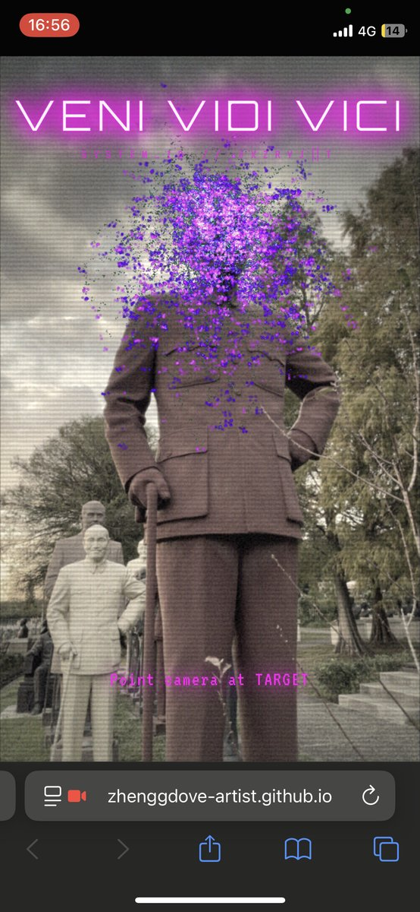
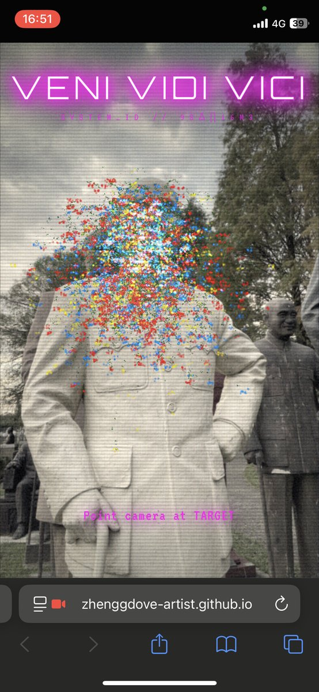
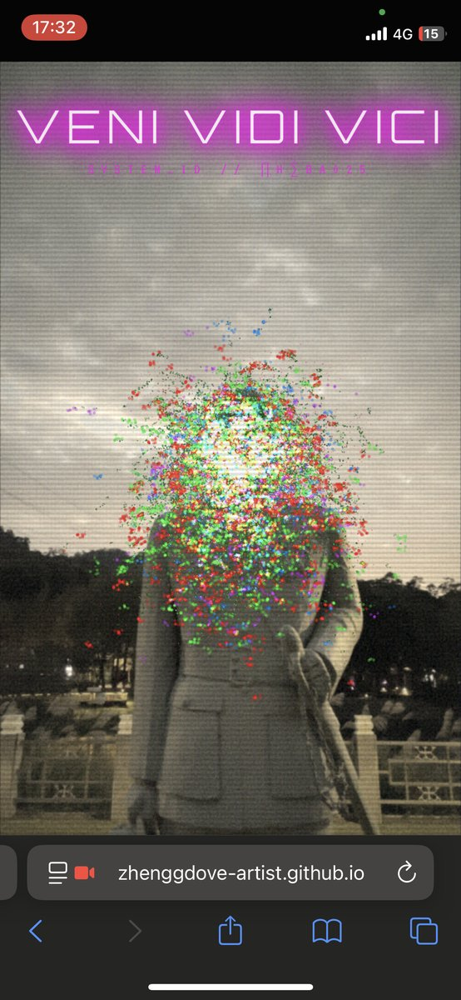
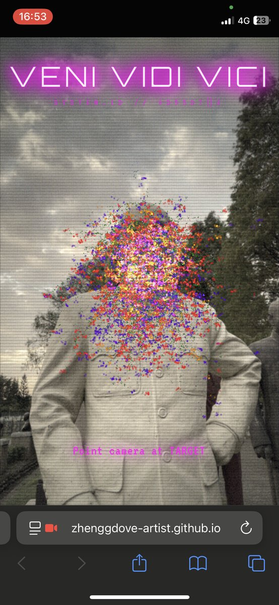
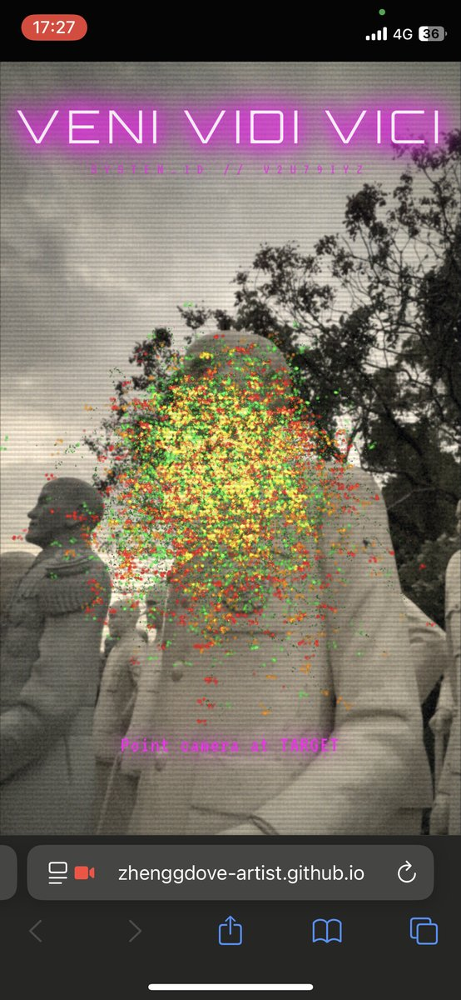
Urban Legend - All flowers
〈都市傳說─全都開成了花〉
隨著不明墜落的身影疊加，它們逐漸合成了全新的背景日常。那些無解的消逝漸漸剝落了寫實的色彩，人們看慣了清洗過後的地面，也習慣了繞道而行。
最終它們成了不可考證的都市傳說—那些來自虛擬裂縫的靈光，帶著人們最後留下的話語，落成了奇異森林的養分。
作品以隱藏的二維條碼鑲嵌在各個無可疑的墜樓命案現場。抵達樓梯頂部並輸入文字後，你將墜落成一株美麗的植物。
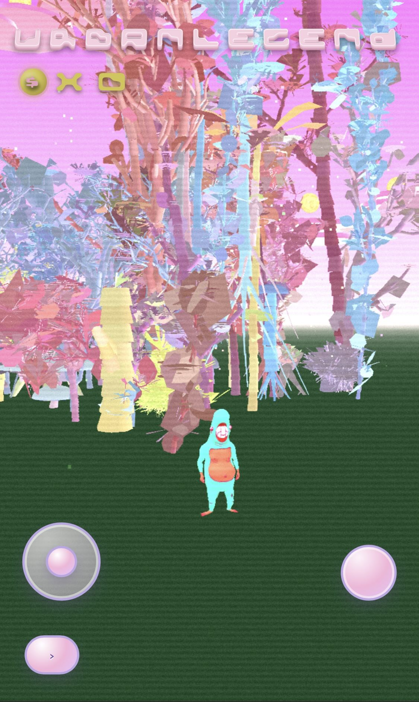
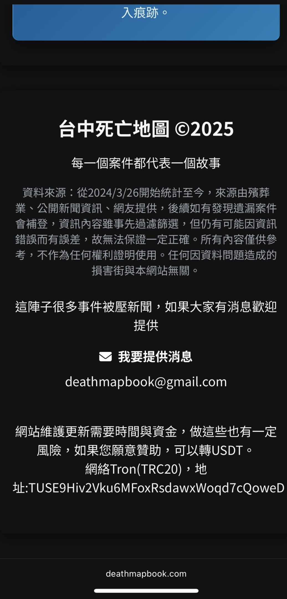
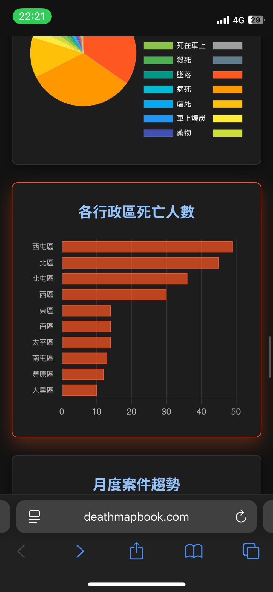
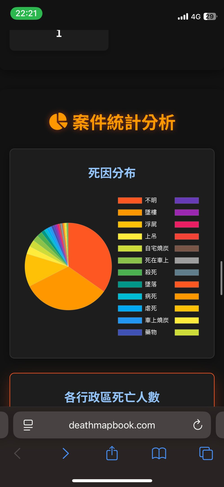
Urban Legend II - Run Artist RUN!
〈都市傳說II-Run Artist RUN!〉
《Run Artist RUN!》源自藝術家於墨爾本駐村期間的一次衝突經驗。當他在高架橋下塗鴉時，遭一名以橋下為居所的無家者攻擊與驅趕。邊緣的公共空間被藝術家視為可運用轉化的媒材，然而在無家者的視角下卻是好不容易建立起的私人生活邊界。
作品將這段經驗轉化為遊戲重新建模了當地的地景，玩家扮演捍衛領地的在地居民，擊退前來塗鴉的藝術家。每擊倒一名藝術家，橋下便長出一朵花，最終形成花園。作品以荒謬的遊戲邏輯，反轉藝術家、居民與城市空間之間的權力位置，指向一種帶有懺悔意味的自我批判。
重新檢視公共空間、外來者視角與藝術介入之間的權力關係。
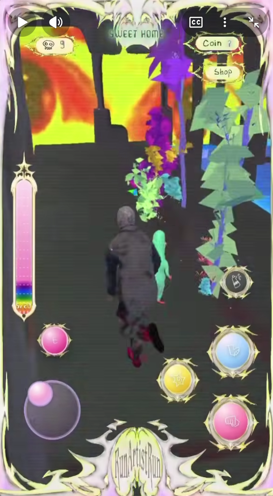
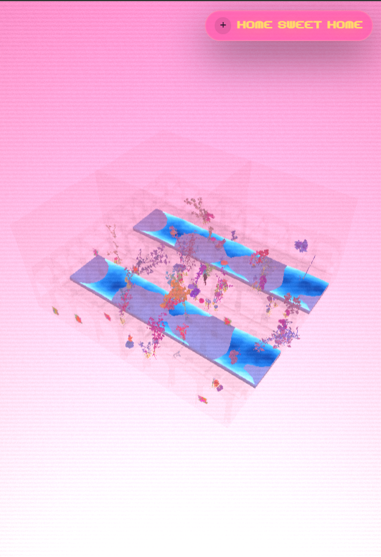
Urban Legend III - 鼠巴拉西
〈都市傳說III—鼠巴拉西〉
你將操控一隻狂亂的老鼠，藉由啃咬並操控人類破壞城市，使之更適合老鼠棲息。
遊戲連結以隱藏 QR code 形式蓋印在台北各個曾經被目擊冒出大量老鼠的地方。以紫外光照射掃描後得以進入遊玩。
「初醒之鼠以利齒為法器啃咬
將狂亂靈種注入凡人血脈。
遭附身的人類淪為盲目傀儡，
瘋狂砸毀街道，
以污濁覆蓋大地。
使腥臭築成祭壇。
萬鼠之神於混沌中降臨，
世界終重歸鼠族榮耀。」
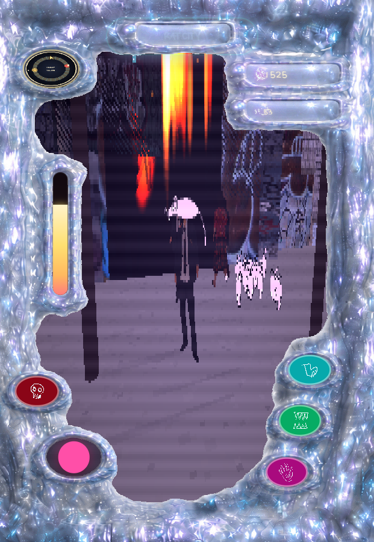
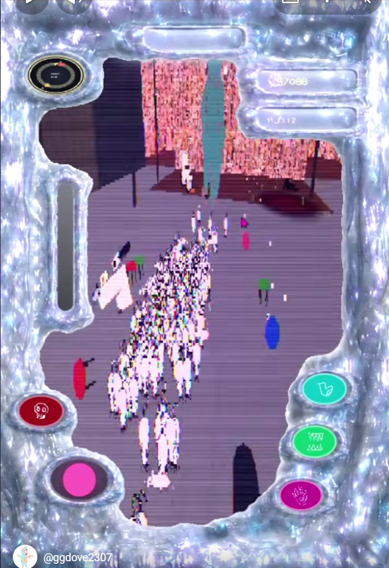
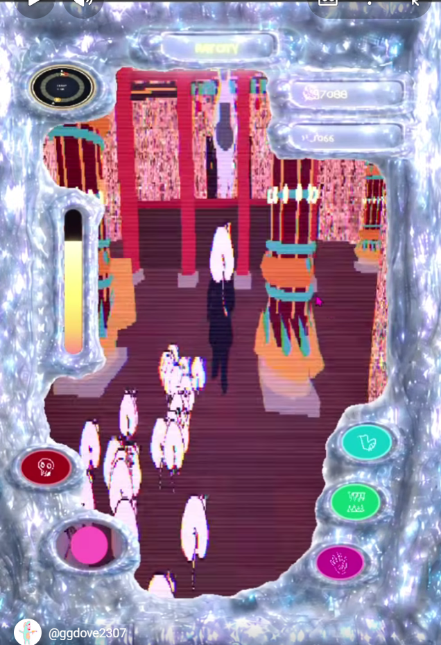